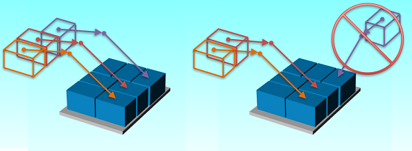
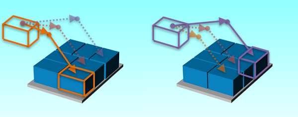

This section allows a user to teach the path used to handle the products of their stations.
A path is composed of multiple motions: Approach, Pick/Place, Depart. For each motion, the position, motion type, position type and speed can be entered. This path will then be shifted to handle all other parts in the same manner. Depending on the number of approach and departure positions specified in the previous screen, more approach and departure positions may be required. If the "Inverse Approach" option was selected from the previous screen, users will only be required to enter the approach positions, and the pick or place position. With the option enabled, an inversion notice will display on the departure tabs.
By default, the application will suggest points based on the selected product and station type. However, they can be overwritten.Move Type: Type of motion to a position - Joint Move (joint interpolation) or Linear Move (straight line). The "%" option for Linear Move defines linear speed as percentage of maximum speed instead of mm/s.
Speed: Speed at which the motion will execute. For "Joint Move" and "Linear Move (%)", speed is specified as a percentage of maximum speed and "Linear Move (%) must at least equal 50%. For "Linear Move", speed is defined in mm/s.
Position Type: positions can be classified as either "Fixed" or "Relative".
Position: Destination relative to the reference user frame of the station. Positions are defined by coordinates (X, Y, Z) and tool orientation (Rx, Ry, Rz). Values can be set by editing individual fields or using "Teach position" to record the current position of the robot.
To teach a Position, select the desired tab: Approach, Pick/Place, Depart. Then jog the robot to the desired position relative to the first part of the pattern. Once in position, press "TEACH" to record the current position. Repeat for other motions.
To verify a position, press "Go To Position" to display the "Target" position in the Jogging panel. Press "Go To Position" of the Jogging panel to move the robot to the Target.
Stack Search Dispensers
Stack search dispensers usually need an approach point directly above the Pick position, this defined the direction of the search. Then it uses at least two depart points straight up: the first one is a short motion at lower speed used to separate the picked product from the stack; the second depart point is to clear the dispenser side before moving to another station.
Build Stations - Boxes
For build layers involving boxes, the position of Box 1 from the layer should be taught. Moreover, when a box is turned relative to the first box:


Note: When using the default suggested positions for place layers, your gripper's relative position must match that of when it was used to teach the pick position. Otherwise, your product may be placed with the incorrect orientation onto the layer.